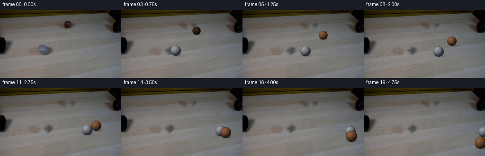
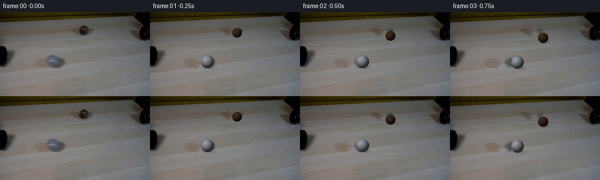
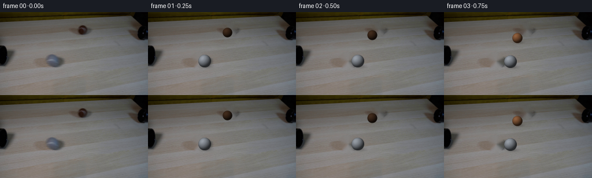
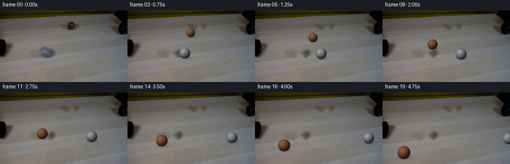

CODING AGENTS AS PIXEL WORLD MODELS
traex/DeepSeek-V4.1-Flash · 0178
点击播放 · 原生 RGB 像素
逐轮保存的候选
回放视频、检查图与代码变化。
每份候选均可单独播放。实际图片检查记录在下方工具轨迹中。
候选 01播放与检查图
点击播放 · 原生 RGB 像素


展开代码变化
--- 上一保存版本
+++ 本次保存版本
@@ -0,0 +1,258 @@
+from pathlib import Path
+
+import cv2
+import numpy as np
+from PIL import Image
+
+import artifact_io
+
+
+WIDTH = 256
+HEIGHT = 144
+FRAME_COUNT = 20
+FPS = 4.0
+SS = 4
+
+
+def smoothstep(edge0, edge1, value):
+ x = np.clip((value - edge0) / (edge1 - edge0), 0.0, 1.0)
+ return x * x * (3.0 - 2.0 * x)
+
+
+def make_clean_plate(source):
+ mask = np.zeros((HEIGHT, WIDTH), dtype=np.uint8)
+ cv2.ellipse(mask, (90, 85), (14, 14), 0, 0, 360, 255, -1)
+ cv2.ellipse(mask, (143, 30), (11, 11), 0, 0, 360, 255, -1)
+
+ plate = cv2.inpaint(
+ cv2.cvtColor(source, cv2.COLOR_RGB2BGR),
+ mask,
+ 3,
+ cv2.INPAINT_TELEA,
+ )
+ plate = cv2.cvtColor(plate, cv2.COLOR_BGR2RGB)
+
+ # Preserve the source grain in otherwise smooth inpainted areas.
+ rng = np.random.default_rng(178)
+ grain = rng.normal(0.0, 0.9, (HEIGHT, WIDTH, 1))
+ soft_mask = cv2.GaussianBlur(mask, (0, 0), 1.8).astype(np.float32) / 255.0
+ plate = plate.astype(np.float32) + grain * soft_mask[..., None]
+ return np.clip(plate, 0, 255).astype(np.uint8)
+
+
+def rotation_matrix(axis, angle):
+ axis = np.asarray(axis, dtype=np.float64)
+ axis /= np.linalg.norm(axis)
+ x, y, z = axis
+ c = np.cos(angle)
+ s = np.sin(angle)
+ one_c = 1.0 - c
+ return np.array(
+ [
+ [c + x * x * one_c, x * y * one_c - z * s, x * z * one_c + y * s],
+ [y * x * one_c + z * s, c + y * y * one_c, y * z * one_c - x * s],
+ [z * x * one_c - y * s, z * y * one_c + x * s, c + z * z * one_c],
+ ],
+ dtype=np.float64,
+ )
+
+
+def render_ball(radius, roll_angle, velocity, color, inside_pipe=False):
+ diameter = int(np.ceil(2.0 * radius + 4.0))
+ size = diameter * SS
+ center = (size - 1) * 0.5
+ yy, xx = np.mgrid[0:size, 0:size].astype(np.float64)
+ nx = (xx - center) / (radius * SS)
+ ny = (yy - center) / (radius * SS)
+ rr2 = nx * nx + ny * ny
+ inside = rr2 <= 1.0
+ nz = np.sqrt(np.clip(1.0 - rr2, 0.0, 1.0))
+
+ vx, vy = velocity
+ speed = np.hypot(vx, vy)
+ if speed < 1e-6:
+ vx, vy = 1.0, 0.0
+ else:
+ vx, vy = vx / speed, vy / speed
+ axis = np.array([vy, -vx, 0.0])
+ rot = rotation_matrix(axis, roll_angle)
+
+ points = np.stack((nx, ny, nz), axis=-1)
+ tex = points @ rot.T
+ tx, ty, tz = tex[..., 0], tex[..., 1], tex[..., 2]
+
+ light = np.array([-0.46, -0.56, 0.69], dtype=np.float64)
+ light /= np.linalg.norm(light)
+ ndotl = np.clip(points @ light, 0.0, 1.0)
+ shade = 0.31 + 0.76 * ndotl
+ edge_occlusion = 0.72 + 0.28 * np.power(nz, 0.38)
+ shade *= edge_occlusion
+
+ # Fine felt grain tied to the sphere surface.
+ grain = (
+ 0.55 * np.sin(17.0 * tx + 11.0 * ty + 3.1 * tz)
+ + 0.35 * np.sin(31.0 * ty - 13.0 * tz + 0.7)
+ + 0.22 * np.sin(41.0 * tz + 7.0 * tx)
+ )
+ felt = 1.0 + 0.018 * grain
+
+ seam_a = np.abs(tx - 0.53 * np.sin(2.7 * ty + 0.45) - 0.10 * np.sin(4.0 * tz))
+ seam_b = np.abs(tx + 0.53 * np.sin(2.7 * ty - 0.95) + 0.10 * np.sin(4.0 * tz))
+ seam = np.minimum(seam_a, seam_b) < 0.072
+ seam_soft = np.clip(1.0 - np.minimum(seam_a, seam_b) / 0.072, 0.0, 1.0)
+
+ base = np.asarray(color, dtype=np.float64)
+ rgb = base[None, None, :] * (shade * felt)[..., None]
+
+ # Tennis-ball seam catches slightly more light than the surrounding felt.
+ seam_tint = np.array([1.08, 1.06, 1.02], dtype=np.float64)
+ seam_strength = seam.astype(np.float64) * 0.22 + seam_soft * 0.055
+ rgb = rgb * (1.0 + seam_strength[..., None] * (seam_tint[None, None, :] - 1.0))
+
+ # Soft, broad highlight on the upper-left portion of each sphere.
+ view = np.array([-0.22, -0.30, 0.93], dtype=np.float64)
+ view /= np.linalg.norm(view)
+ half = light + view
+ half /= np.linalg.norm(half)
+ spec = np.power(np.clip(points @ half, 0.0, 1.0), 13.0)
+ rgb += (spec * 8.5)[..., None]
+
+ if inside_pipe:
+ rgb *= 0.46
+
+ alpha = inside.astype(np.float32)
+ rgba = np.dstack((np.clip(rgb, 0, 255), alpha * 255.0)).astype(np.uint8)
+ rgba = cv2.resize(
+ rgba,
+ (diameter, diameter),
+ interpolation=cv2.INTER_AREA,
+ )
+ return rgba
+
+
+def render_shadow(radius, opacity=0.24):
+ diameter = int(np.ceil(2.8 * radius + 8.0))
+ size = diameter * SS
+ center_x = (size - 1) * 0.5
+ center_y = (size - 1) * 0.5
+ yy, xx = np.mgrid[0:size, 0:size].astype(np.float64)
+ rx = 1.35 * radius * SS
+ ry = 0.42 * radius * SS
+ d = ((xx - center_x) / rx) ** 2 + ((yy - center_y) / ry) ** 2
+ alpha = np.exp(-2.4 * d) * opacity
+ alpha[d > 1.0] = 0.0
+ shadow = np.zeros((size, size, 4), dtype=np.uint8)
+ shadow[..., :3] = np.array([18, 16, 13], dtype=np.uint8)
+ shadow[..., 3] = np.clip(alpha * 255.0, 0, 255).astype(np.uint8)
+ shadow = cv2.resize(shadow, (diameter, diameter), interpolation=cv2.INTER_AREA)
+ return shadow
+
+
+def alpha_composite(base, sprite, x, y):
+ height, width = sprite.shape[:2]
+ left = int(round(x)) - width // 2
+ top = int(round(y)) - height // 2
+ x0 = max(0, left)
+ y0 = max(0, top)
+ x1 = min(WIDTH, left + width)
+ y1 = min(HEIGHT, top + height)
+ if x0 >= x1 or y0 >= y1:
+ return
+
+ sx0 = x0 - left
+ sy0 = y0 - top
+ sx1 = sx0 + (x1 - x0)
+ sy1 = sy0 + (y1 - y0)
+ patch = sprite[sy0:sy1, sx0:sx1].astype(np.float32)
+ alpha = patch[..., 3:4] / 255.0
+ dst = base[y0:y1, x0:x1].astype(np.float32)
+ base[y0:y1, x0:x1] = np.clip(
+ patch[..., :3] * alpha + dst * (1.0 - alpha),
+ 0,
+ 255,
+ ).astype(np.uint8)
+
+
+def add_shadow(frame, center_x, center_y, radius, opacity):
+ shadow = render_shadow(radius, opacity)
+ alpha_composite(frame, shadow, center_x + 2.2, center_y + 0.82 * radius)
+
+
+def add_ball(frame, center_x, center_y, radius, angle, velocity, color, inside_pipe):
+ sprite = render_ball(radius, angle, velocity, color, inside_pipe=inside_pipe)
+ alpha_composite(frame, sprite, center_x, center_y)
+
+
+def generate_frames(source):
+ plate = make_clean_plate(source)
+ frames = np.empty((FRAME_COUNT, HEIGHT, WIDTH, 3), dtype=np.uint8)
+ frames[0] = source
+
+ grey_start = np.array([89.5, 84.5], dtype=np.float64)
+ grey_velocity = np.array([34.5, 1.8], dtype=np.float64)
+ grey_radius = 11.0
+ grey_color = (137.0, 143.0, 151.0)
+
+ brown_start = np.array([142.5, 30.5], dtype=np.float64)
+ brown_velocity = np.array([22.0, 18.0], dtype=np.float64)
+ brown_color = (128.0, 84.0, 53.0)
+
+ for index in range(1, FRAME_COUNT):
+ t = index / FPS
+ frame = plate.copy()
+
+ grey_pos = grey_start + grey_velocity * t
+ grey_distance = np.linalg.norm(grey_velocity) * t
+ grey_angle = grey_distance / grey_radius
+
+ brown_pos = brown_start + brown_velocity * t
+ brown_radius = 8.0 + 0.055 * (brown_pos[1] - brown_start[1])
+ brown_radius = float(np.clip(brown_radius, 8.0, 13.3))
+ brown_distance = np.linalg.norm(brown_velocity) * t
+ brown_angle = brown_distance / max(brown_radius, 1.0)
+
+ if grey_pos[0] < WIDTH + grey_radius:
+ add_shadow(frame, grey_pos[0], grey_pos[1], grey_radius, 0.25)
+ add_ball(
+ frame,
+ grey_pos[0],
+ grey_pos[1],
+ grey_radius,
+ grey_angle,
+ grey_velocity,
+ grey_color,
+ inside_pipe=False,
+ )
+
+ if brown_pos[0] < WIDTH + brown_radius and brown_pos[1] < HEIGHT + brown_radius:
+ if brown_pos[1] > 40.0:
+ shadow_opacity = 0.18 + 0.10 * smoothstep(40.0, 52.0, brown_pos[1])
+ add_shadow(frame, brown_pos[0], brown_pos[1], brown_radius, shadow_opacity)
+ pipe_shadow = 1.0 - smoothstep(39.0, 47.0, brown_pos[1])
+ add_ball(
+ frame,
+ brown_pos[0],
+ brown_pos[1],
+ brown_radius,
+ brown_angle,
+ brown_velocity,
+ brown_color,
+ inside_pipe=pipe_shadow > 0.22,
+ )
+
+ frames[index] = frame
+
+ return frames
+
+
+def main():
+ case_dir = Path(__file__).resolve().parent
+ source = np.asarray(Image.open(case_dir / "first_frame.png").convert("RGB"))
+ if source.shape != (HEIGHT, WIDTH, 3):
+ raise ValueError(f"Unexpected source shape: {source.shape}")
+ frames = generate_frames(source)
+ artifact_io.save(frames, case_dir)
+
+
+if __name__ == "__main__":
+ main()
候选 02播放与检查图
点击播放 · 原生 RGB 像素


展开代码变化
--- 上一保存版本
+++ 本次保存版本
@@ -194,7 +194,7 @@
grey_color = (137.0, 143.0, 151.0)
brown_start = np.array([142.5, 30.5], dtype=np.float64)
- brown_velocity = np.array([22.0, 18.0], dtype=np.float64)
+ brown_velocity = np.array([-21.0, 19.0], dtype=np.float64)
brown_color = (128.0, 84.0, 53.0)
for index in range(1, FRAME_COUNT):
候选 03播放与检查图
点击播放 · 原生 RGB 像素

展开代码变化
--- 上一保存版本
+++ 本次保存版本
@@ -57,7 +57,7 @@
)
-def render_ball(radius, roll_angle, velocity, color, inside_pipe=False):
+def render_ball(radius, roll_angle, velocity, color, light_factor=1.0):
diameter = int(np.ceil(2.0 * radius + 4.0))
size = diameter * SS
center = (size - 1) * 0.5
@@ -117,8 +117,7 @@
spec = np.power(np.clip(points @ half, 0.0, 1.0), 13.0)
rgb += (spec * 8.5)[..., None]
- if inside_pipe:
- rgb *= 0.46
+ rgb *= light_factor
alpha = inside.astype(np.float32)
rgba = np.dstack((np.clip(rgb, 0, 255), alpha * 255.0)).astype(np.uint8)
@@ -178,8 +177,8 @@
alpha_composite(frame, shadow, center_x + 2.2, center_y + 0.82 * radius)
-def add_ball(frame, center_x, center_y, radius, angle, velocity, color, inside_pipe):
- sprite = render_ball(radius, angle, velocity, color, inside_pipe=inside_pipe)
+def add_ball(frame, center_x, center_y, radius, angle, velocity, color, light_factor=1.0):
+ sprite = render_ball(radius, angle, velocity, color, light_factor=light_factor)
alpha_composite(frame, sprite, center_x, center_y)
@@ -221,14 +220,13 @@
grey_angle,
grey_velocity,
grey_color,
- inside_pipe=False,
)
if brown_pos[0] < WIDTH + brown_radius and brown_pos[1] < HEIGHT + brown_radius:
if brown_pos[1] > 40.0:
shadow_opacity = 0.18 + 0.10 * smoothstep(40.0, 52.0, brown_pos[1])
add_shadow(frame, brown_pos[0], brown_pos[1], brown_radius, shadow_opacity)
- pipe_shadow = 1.0 - smoothstep(39.0, 47.0, brown_pos[1])
+ pipe_shadow = 1.0 - smoothstep(33.0, 48.0, brown_pos[1])
add_ball(
frame,
brown_pos[0],
@@ -237,7 +235,7 @@
brown_angle,
brown_velocity,
brown_color,
- inside_pipe=pipe_shadow > 0.22,
+ light_factor=0.46 + 0.54 * (1.0 - pipe_shadow),
)
frames[index] = frame
候选 04播放与检查图
可观测工具轨迹
实际执行的命令与返回图片。
命令 1exit 0
/bin/bash -c "pwd && rg --files -g '"'!*.pyc'"' -g '"'!__pycache__'"' | sed -n '1,200p'"
命令 2exit 0
/bin/bash -c "sed -n '1,240p' prompt.txt"
命令 3exit 0
/bin/bash -c "sed -n '1,300p' GENERATION_RULES.md"
命令 4exit 0
/bin/bash -c "ls -lah && file first_frame.png 2>/dev/null || true && python - <<'PY'
from PIL import Image
im=Image.open('first_frame.png')
print(im.size, im.mode)
PY"命令 5exit 0
/bin/bash -c "sed -n '1,260p' artifact_io.py"
命令 6exit 0
/bin/bash -c "sed -n '1,260p' player_template.html"
命令 7exit 0
/bin/bash -c "python - <<'PY'
from PIL import Image
import numpy as np
im=np.array(Image.open('first_frame.png'))
print('shape', im.shape)
print('min/max/mean', im.min((0,1)), im.max((0,1)), im.mean((0,1)))
# quantized palette most common
q=(im//16)*16
u,c=np.unique(q.reshape(-1,3),axis=0,return_counts=True)
for i in np.argsort(c)[-20:][::-1]: print(tuple(u[i]), int(c[i]))
PY"命令 8exit 0
/bin/bash -c "python - <<'PY'
from PIL import Image
import numpy as np
im=np.array(Image.open('first_frame.png')).astype(float)
h,w,_=im.shape
# 64x36 downsample, categories by local mean color
for y0 in range(0,h,4):
row=''
for x0 in range(0,w,4):
c=im[y0:y0+4,x0:x0+4].mean((0,1)); r,g,b=c
br=(r+g+b)/3
mx=max(c); mn=min(c)
if br<32: ch='@'
elif br<55: ch='#'
elif br<75: ch='%'
elif br<95: ch='='
elif r-g>18 and g-b>12: ch='W' # wood
elif g-r>8 and g-b>10: ch='G'
elif b-r>10: ch='B'
elif br>120: ch='.'
else: ch='-'
row+=ch
print(row)
PY"命令 9exit 0
/bin/bash -c "python - <<'PY'
try:
import cv2; print('cv2',cv2.__version__)
except Exception as e: print('no cv2',e)
try:
import scipy; print('scipy',scipy.__version__)
except Exception as e: print('no scipy',e)
PY"命令 10exit 0
/bin/bash -c "python - <<'PY'
from PIL import Image
im=Image.open('first_frame.png')
im.resize((1024,576), Image.Resampling.NEAREST).save('.tmp/first_frame_4x.png')
PY"命令 11exit 0
/bin/bash -c "python - <<'PY'
import cv2, numpy as np
im=cv2.imread('first_frame.png')[:,:,::-1]
# object probes on a 32x18 grid: print mean RGB if dark local patch
for y in range(0,144,8):
vals=[]
for x in range(0,256,8):
c=im[y:y+8,x:x+8].mean((0,1)); vals.append('%3d,%3d,%3d'%tuple(c.astype(int)))
print(y, ' | '.join(vals))
PY"命令 12exit 0
/bin/bash -c "python - <<'PY'
import cv2, numpy as np
im=cv2.imread('first_frame.png')
rgb=im[:,:,::-1]
gray=cv2.cvtColor(im,cv2.COLOR_BGR2GRAY)
hsv=cv2.cvtColor(im,cv2.COLOR_BGR2HSV)
print('gray percentiles',np.percentile(gray,[0,1,5,10,20,50,80,90,95,99,100]))
# dark masks in lower scene
for t in [35,45,55,65,75,85]:
m=(gray<t).astype(np.uint8)*255
n, lab, stats, cen=cv2.connectedComponentsWithStats(m,8)
print('\\nthreshold',t)
for i in range(1,n):
x,y,w,h,a=stats[i]
if a>=20: print(' ',x,y,w,h,a)
# edges
ed=cv2.Canny(im,40,100)
lines=cv2.HoughLinesP(ed,1,np.pi/180,threshold=20,minLineLength=15,maxLineGap=4)
print('\\nlines',None if lines is None else len(lines))
if lines is not None:
ls=[]
for x1,y1,x2,y2 in lines[:,0]:
length=((x2-x1)**2+(y2-y1)**2)**.5
ang=np.degrees(np.arctan2(y2-y1,x2-x1))
if length>18: ls.append((round(length,1),round(ang,1),x1,y1,x2,y2))
for z in sorted(ls,reverse=True)[:40]: print(z)
PY"命令 13exit 0
/bin/bash -c "python - <<'PY'
from PIL import Image
import numpy as np
im=np.array(Image.open('first_frame.png')).astype(int)
# identify near-black connected comps
import cv2
m=(im.mean(2)<60).astype('uint8')*255
n,l,s,c=cv2.connectedComponentsWithStats(m,8)
for i in range(1,n):
x,y,w,h,a=s[i]
if a>15: print(i,(x,y,w,h,a),c[i])
# exact crop pipe candidates save 8x
for name,box in [('left',(0,45,45,110)),('right',(105,0,195,50)),('balls',(70,65,125,110)),('scene',(0,0,256,144))]:
x1,y1,x2,y2=box
Image.fromarray(im[y1:y2,x1:x2].astype('uint8')).resize(((x2-x1)*8,(y2-y1)*8),Image.Resampling.NEAREST).save('.tmp/'+name+'.png')
PY"命令 14exit 0
/bin/bash -c "python - <<'PY'
from PIL import Image
import numpy as np, colorsys
im=np.array(Image.open('first_frame.png')).astype(int)
# 2x2 map y40..120 x0..256
for y in range(40,124,2):
row=''
for x in range(0,256,2):
c=im[y:y+2,x:x+2].mean((0,1)); r,g,b=c; mx=max(c); mn=min(c); br=c.mean()
sat=(mx-mn)/(mx+1e-3)
if br<20: ch='@'
elif br<40: ch='#'
elif br<60: ch='%'
elif br<80: ch='='
elif sat>.20 and r-g>10 and g-b>5: ch='W' # brown/wood
elif sat>.18 and g-r>5: ch='G'
elif sat>.18 and b-r>5: ch='B'
elif br>145: ch=' '
elif br>120: ch='.'
elif br>100: ch='-'
else: ch=':'
row+=ch
print('%3d '%y+row)
PY"命令 15exit 0
/bin/bash -c "python - <<'PY'
from PIL import Image
import numpy as np
im=np.array(Image.open('first_frame.png')).astype(int)
# patch x100-190 y0-56, 2px symbols based luma and chroma
for y in range(0,58,2):
row=''
for x in range(96,196,2):
c=im[y:y+2,x:x+2].mean((0,1)); br=c.mean(); r,g,b=c
if br<15: ch='@'
elif br<30: ch='#'
elif br<45: ch='%'
elif br<60: ch='='
elif br<75: ch='+'
elif br<90: ch='-'
elif br<105: ch=':'
elif br<120: ch='.'
else: ch=' '
row+=ch
print('%3d '%y+row)
print(' '+''.join(str((x//10)%10) for x in range(96,196,2)))
# exact row luma x100:170
for y in [20,22,24,26,28,30,32,34,36,38,40,42,44,46,48,50,52,54]:
print(y, ' '.join(f'{int(im[y,x].mean()):3}' for x in range(100,180,2)))
PY"命令 16exit 0
/bin/bash -c "python - <<'PY'
from PIL import Image
import numpy as np
im=np.array(Image.open('first_frame.png')).astype(int)
# show exact RGB / luma grid for top dark opening
for y in range(14,48):
vals=[]
for x in range(122,166):
c=im[y,x]; vals.append(int(c.mean()))
print(f'{y:3d} '+''.join('@' if v<25 else '#' if v<40 else '%' if v<55 else '=' if v<70 else '+' if v<82 else '-' if v<94 else ':' if v<106 else '.' if v<118 else ' ' for v in vals))
print(' '+''.join(str(x//100) for x in range(122,166)))
print(' '+''.join(str((x//10)%10) for x in range(122,166)))
print(' '+''.join(str(x%10) for x in range(122,166)))
PY"命令 17exit 0
/bin/bash -c "python - <<'PY'
from PIL import Image
import numpy as np
im=np.array(Image.open('first_frame.png')).astype(int)
# exact rgb crop left pipe y55:95 x0:30 and balls x85:118 y74:100
for y in range(56,96,2):
print('Y',y)
for x in range(0,30,3):
print(x, tuple(im[y:y+2,x:x+3].mean((0,1)).astype(int)), end='; ')
print()
print('balls')
for y in range(72,102,2):
print(y, ' '.join('%3d'%int(im[y,x].mean()) for x in range(80,126,2)))
PY"命令 18exit 0
/bin/bash -c "python - <<'PY'
import cv2, numpy as np
im=cv2.imread('first_frame.png')[:,:,::-1]
hsv=cv2.cvtColor(im[:,:,::-1],cv2.COLOR_BGR2HSV)
# stats of saturation weighted by luma
h,s,v=[hsv[:,:,i] for i in range(3)]
for desc,m in [
('sat>60',(s>60)&(v>30)),
('green hue 20-55 sat>60',(h>=20)&(h<=55)&(s>60)&(v>30)),
('brown hue 0-25 sat>80',(h<25)&(s>80)&(v>30)),
('blue',(h>90)&(s>50)&(v>30)),
]:
m=m.astype('uint8')*255
n,l,st,c=cv2.connectedComponentsWithStats(m,8)
print('\\n',desc,'pixels',int((m>0).sum()))
for i in range(1,n):
x,y,w,hh,a=st[i]
if a>=10:
ys,xs=np.where(l==i)
print((x,y,w,hh,a), 'mean',tuple(im[ys,xs].mean(0).astype(int)), 'hsv',tuple(hsv[ys,xs].mean(0).astype(int)))
# Most saturated blocks
print('\\nblocks')
for y in range(50,120,4):
vals=[]
for x in range(0,256,4):
c=im[y:y+4,x:x+4].mean((0,1)); mx=c.max();mn=c.min();sat=mx-mn
if sat>18 and c.mean()>20:
vals.append((x,tuple(c.astype(int))))
print(y,vals)
PY"命令 19exit 0
/bin/bash -c "python - <<'PY'
import cv2, numpy as np
im=cv2.imread('first_frame.png')[:,:,::-1]
# hough circles multiple params
for p2 in [8,10,12,14,16,20]:
cs=cv2.HoughCircles(cv2.cvtColor(im,cv2.COLOR_RGB2GRAY),cv2.HOUGH_GRADIENT,dp=1,minDist=8,param1=60,param2=p2,minRadius=4,maxRadius=18)
print('p2',p2, None if cs is None else np.round(cs[0],1).tolist())
# kmeans colors
pix=im.reshape(-1,3).astype(np.float32)
crit=(cv2.TERM_CRITERIA_EPS+cv2.TERM_CRITERIA_MAX_ITER,50,.5)
K=12
_,lab,cent=cv2.kmeans(pix,K,None,crit,5,cv2.KMEANS_PP_CENTERS)
lab=lab.reshape(im.shape[:2]); cent=cent.astype(int)
for i,c in enumerate(cent):
ys,xs=np.where(lab==i)
print(i,tuple(c),len(xs),'bbox',xs.min(),ys.min(),xs.max(),ys.max(),'centroid',round(xs.mean(),1),round(ys.mean(),1))
PY"命令 20exit 0
/bin/bash -c "python - <<'PY'
from PIL import Image
import numpy as np
im=np.array(Image.open('first_frame.png')).astype(int)
# rgb grid balls, crop x82-122 y70-100, chars by b-r
for y in range(70,102):
row=''
for x in range(82,122):
r,g,b=im[y,x]; br=(r+g+b)/3
if br<50: ch='@'
elif br<70: ch='#'
elif br<90: ch='='
elif br<105: ch='+'
elif br<118: ch='-'
elif br<130: ch='.'
else: ch=' '
if b-r>10: ch='B'
elif r-b>10: ch='R'
row+=ch
print(f'{y:3d} {row}')
print(' '+''.join(str((x//10)%10) for x in range(82,122)))
print(' '+''.join(str(x%10) for x in range(82,122)))
# exact colors in local ball ring
for y in range(72,101):
print(y, [tuple(im[y,x]) for x in range(84,122,3)])
PY"命令 21exit 0
/bin/bash -c "python - <<'PY'
from PIL import Image
import numpy as np
im=np.array(Image.open('first_frame.png')).astype(int)
# print colorized-ish map whole image using coarse categories at 2px blocks, include chroma and luma
for y in range(0,144,3):
row=''
for x in range(0,256,2):
c=im[y:y+3,x:x+2].mean((0,1)); r,g,b=c; br=c.mean(); sat=c.max()-c.min()
# categories tuned: dark, neutral, wood, cool, green
if br<25: ch='@'
elif br<45: ch='#'
elif br<65: ch='%'
elif br<85: ch='='
elif br<105: ch=':'
elif br<125: ch='.'
else: ch=' '
if sat>25 and r-b>15: ch='w' # brown/orange
elif sat>25 and b-r>12: ch='b'
elif sat>25 and g-r>8: ch='g'
row+=ch
print(f'{y:3d} {row}')
PY"命令 22exit 0
/bin/bash -c "python - <<'PY'
import cv2, numpy as np
im=cv2.imread('first_frame.png')[:,:,::-1].astype(float)
g=cv2.cvtColor(im.astype('uint8'),cv2.COLOR_RGB2GRAY)
# print local luma and chroma as characters around balls, with ball candidates by color
for y in range(68,100):
row=''
for x in range(82,126):
r,gg,b=im[y,x]; br=(r+gg+b)/3; sat=max(r,gg,b)-min(r,gg,b)
if br<65: ch='@'
elif br<75: ch='#'
elif br<85: ch='%'
elif br<95: ch='='
elif br<105: ch='+'
elif br<115: ch='-'
elif br<125: ch='.'
else: ch=' '
if b-r>8 and br>55: ch='b' if br<95 else 'B'
if r-b>12 and br<125 and y>76: ch='r' if br<105 else 'R'
row+=ch
print(f'{y:3d} {row}')
print(' '+''.join(str((x//10)%10) for x in range(82,126)))
print(' '+''.join(str(x%10) for x in range(82,126)))
# Find circles using Hough on gradient after enhancing saturation
roi=im[65:105,75:130].astype(np.uint8)
for blur in [3,5,7]:
gg=cv2.cvtColor(roi,cv2.COLOR_RGB2GRAY)
gg=cv2.GaussianBlur(gg,(blur,blur),0)
for p2 in [8,10,12,14]:
cs=cv2.HoughCircles(gg,cv2.HOUGH_GRADIENT,dp=1,minDist=10,param1=50,param2=p2,minRadius=7,maxRadius=15)
print('blur',blur,'p2',p2, None if cs is None else (cs[0]+[75,65,0]).round(2).tolist())
PY"命令 23exit 0
/bin/bash -c "python - <<'PY'
import cv2, numpy as np
im=cv2.imread('first_frame.png')[:,:,::-1]
# For suspected circles center and radius estimate edge gradient radial profile
for cx,cy in [(89.5,84.5),(90,84),(104,82),(145,29),(143,31)]:
print('\\ncenter',cx,cy)
for r in range(5,18):
vals=[]
for a in np.linspace(0,2*np.pi,180,endpoint=False):
x=int(round(cx+r*np.cos(a))); y=int(round(cy+r*np.sin(a)))
if 0<=x<256 and 0<=y<144: vals.append(im[y,x].mean())
print(r, round(np.mean(vals),1),round(np.std(vals),1))
PY"命令 24exit 0
/bin/bash -c "python - <<'PY'
from PIL import Image
import numpy as np
im=np.array(Image.open('first_frame.png'))
# Generate vertical/horizontal line profiles around left opening
for y in [58,60,62,64,66,68,70,72,74,76,78,80,82,84,86,88,90,92,94]:
print('y',y,[(x,tuple(im[y,x])) for x in range(0,25,2)])
PY"命令 25exit 0
/bin/bash -c "python generate.py && python - <<'PY'
from PIL import Image
import numpy as np
src=np.array(Image.open('first_frame.png'))
f0=np.array(Image.open('frames/00.png'))
print('frame00 identical:', np.array_equal(src,f0), 'maxdiff',np.abs(src.astype(int)-f0).max())
a=np.array(Image.open('inspection.png'))
print('inspection',a.shape)
PY"命令 26exit 0
/bin/bash -c 'command -v chafa || command -v viu || command -v img2txt || command -v jp2 || true'
命令 27exit 0
/bin/bash -c "python - <<'PY'
from PIL import Image
import numpy as np
# show a compact frame-difference footprint per frame
frames=[np.array(Image.open(f'frames/{i:02d}.png')).astype(int) for i in range(20)]
base=frames[0]
for i,f in enumerate(frames):
d=np.abs(f-base).max(2)
ys,xs=np.where(d>10)
print(i,'changed',len(xs),'bbox',None if len(xs)==0 else (xs.min(),ys.min(),xs.max(),ys.max()),'mean',round(float(d.mean()),2),'max',int(d.max()))
# contact sheet 5 x 4 at 2x nearest
sheet=Image.new('RGB',(256*4,144*5),(20,20,20))
for i,f in enumerate(frames):
im=Image.fromarray(f.astype('uint8')).resize((512,288),Image.Resampling.NEAREST)
x=(i%2)*512;y=(i//2)*288
# 2 columns 10 rows does not fit intended, make 4 columns scaled 1x
im=Image.new('RGB',(256*4,144*5),(20,20,20))
for i,f in enumerate(frames):
x=(i%4)*256;y=(i//4)*144
im.paste(Image.fromarray(f.astype('uint8')),(x,y))
im.resize((1024,720),Image.Resampling.NEAREST).save('.tmp/all_frames.png')
PY"命令 28exit 0
/bin/bash -c "python - <<'PY'
from PIL import Image
import numpy as np
# Print coarse ASCII of selected frames: background ignored by difference from frame0, mark old/new ball pixels
f0=np.array(Image.open('frames/00.png')).astype(int)
for idx in [0,1,2,3,5,8,12,16,19]:
f=np.array(Image.open(f'frames/{idx:02d}.png')).astype(int)
d=np.abs(f-f0).max(2)
print('\\nFRAME',idx)
for y in range(16,136,4):
row=''
for x in range(0,256,4):
v=d[y:y+4,x:x+4].max()
if v<12: ch=' '
elif v<30: ch='.'
elif v<55: ch='+'
elif v<85: ch='#'
else: ch='@'
row+=ch
print(row)
PY"命令 29exit 0
/bin/bash -c "python - <<'PY'
from PIL import Image
import numpy as np, cv2
src=np.array(Image.open('frames/00.png'))
f1=np.array(Image.open('frames/01.png'))
f5=np.array(Image.open('frames/05.png'))
# circle stats source grey at (89.5,84.5,r10), rendered at (98,85,r10)
for name,im,cx,cy,r in [('src-grey',src,90,85,10),('f1-grey',f1,98,85,10),('src-brown',src,143,31,7),('f1-brown',f1,143,35,8),('f5-brown',f5,170,53,9)]:
yy,xx=np.ogrid[:144,:256]; m=(xx-cx)**2+(yy-cy)**2<=r*r
p=im[m].astype(float)
print(name,'mean',p.mean(0).round(1),'std',p.std(0).round(1),'min',p.min(0),'max',p.max(0),'q10/50/90',np.percentile(p,[10,50,90],axis=0).round(1))
PY"命令 30exit 0
/bin/bash -c "python - <<'PY'
import importlib.util, numpy as np
from PIL import Image
spec=importlib.util.spec_from_file_location('g','generate.py');g=importlib.util.module_from_spec(spec);spec.loader.exec_module(g)
s=np.array(Image.open('first_frame.png')); p=g.make_clean_plate(s)
for name,(x0,y0,x1,y1) in {'grey':(74,69,106,101),'brown':(129,16,158,45)}.items():
d=np.abs(s[y0:y1,x0:x1].astype(int)-p[y0:y1,x0:x1]).mean(2)
print(name,'diff',d.mean(),d.max())
for y in range(y0,y1,3):
print(y, ' '.join('%3d'%int(d[y-y0,x-x0]) for x in range(x0,x1,3)))
PY"命令 31exit 0
/bin/bash -c "python generate.py && python - <<'PY'
from PIL import Image
import numpy as np
src=np.array(Image.open('first_frame.png'))
f0=np.array(Image.open('frames/00.png'))
print('frame00 identical:',np.array_equal(src,f0))
print('npz/index present')
PY"命令 32exit 0
/bin/bash -c "python - <<'PY'
import cv2, numpy as np
from PIL import Image
for i in range(20):
im=np.array(Image.open(f'frames/{i:02d}.png'))
gray=cv2.cvtColor(im,cv2.COLOR_RGB2GRAY)
# search expected areas; Hough globally after blur
blur=cv2.GaussianBlur(gray,(3,3),0)
cs=cv2.HoughCircles(blur,cv2.HOUGH_GRADIENT,dp=1,minDist=14,param1=60,param2=12,minRadius=6,maxRadius=14)
c=[] if cs is None else [tuple(np.round(z,1)) for z in cs[0]]
print(i,c)
PY"命令 33exit 0
/bin/bash -c "python - <<'PY'
from PIL import Image
import numpy as np
# quantify rolling texture and seam presence inside generated grey ball frames; compare known source
for i in [1,2,5,10,15,19]:
im=np.array(Image.open(f'frames/{i:02d}.png')).astype(float)
cx=89.5+34.5*(i/4); cy=84.5+1.8*(i/4)
yy,xx=np.ogrid[:144,:256]; m=(xx-cx)**2+(yy-cy)**2<=9.0**2
p=im[m]
# grayscale highpass std in inner disk
print(i,'center',round(cx,1),round(cy,1),'mean',p.mean(0).round(1),'std',p.std(0).round(1))
# inspect frame 1 diff from clean plate near ball
f=np.array(Image.open('frames/01.png'))
# color min max
PY"命令 34exit 0
/bin/bash -c "python - <<'PY'
from PIL import Image
import numpy as np
im=np.array(Image.open('first_frame.png')).astype(float)
# derive brown ball region from source, estimate center & radius based on segmentation against local background trend
# print RGB lines through center x=143 at y 22-39
for y in range(22,40):
print(y, [tuple(im[y,x].astype(int)) for x in range(134,154,2)])
PY"命令 35exit 0
/bin/bash -c "python - <<'PY'
from PIL import Image
import numpy as np
im=np.array(Image.open('frames/01.png')).astype(float)
# block-level print of local ball region with coarse chars based RGB differences
for y in range(70,102,2):
row=''
for x in range(80,118,2):
c=im[y:y+2,x:x+2].mean((0,1));r,g,b=c;br=c.mean()
if br<50:ch='@'
elif br<70:ch='#'
elif br<90:ch='='
elif br<105:ch='+'
elif br<118:ch='-'
elif br<130:ch='.'
else:ch=' '
if b-r>10: ch='B'
elif r-b>10: ch='R'
row+=ch
print(f'{y:3d} {row}')
PY"命令 36exit 0
/bin/bash -c "python - <<'PY'
from PIL import Image
import numpy as np
im=np.array(Image.open('frames/01.png')).astype(float)
# actual local stats at sample positions
for y in range(72,99,3):
print(y, [(x,tuple(im[y,x].astype(int))) for x in range(84,114,4)])
PY"命令 37exit 0
/bin/bash -c "python - <<'PY'
from PIL import Image
import numpy as np
for i in range(20):
im=np.array(Image.open(f'frames/{i:02d}.png')).astype(int)
# white pixels near left opening should remain dark; report max luma in pipe mouth
roi=im[58:94,0:10].mean(2)
print(i,'pipe dark max',int(roi.max()),'mean',round(float(roi.mean()),1))
PY"命令 38exit 0
/bin/bash -c "python - <<'PY'
import numpy as np
from PIL import Image
# Compare source brown ball apparent color vs intended brown; list low-luma colored region samples
im=np.array(Image.open('first_frame.png')).astype(float)
reg=im[23:40,134:153]
m=reg.mean(2)<65
p=reg[m]
print('count',len(p),'mean',p.mean(0),'median',np.median(p,0),'pct',np.percentile(p,[5,25,50,75,95],axis=0))
PY"命令 39exit 0
/bin/bash -c "python - <<'PY'
import numpy as np
from PIL import Image
for i in [1,2,3,4,5,6,7,8]:
im=np.array(Image.open(f'frames/{i:02d}.png')).astype(float)
t=i/4; cx=142.5-21*t; cy=30.5+19*t
r=8+.055*(cy-30.5)
yy,xx=np.ogrid[:144,:256]; m=(xx-cx)**2+(yy-cy)**2<=r*r
p=im[m]
print(i,'center',round(cx,1),round(cy,1),'r',round(r,1),'mean',p.mean(0).round(1),'std',p.std(0).round(1),'med',np.median(p,0))
PY"命令 40exit 0
/bin/bash -c "python - <<'PY'
from PIL import Image
import numpy as np
# show generated brown ball center line to tune color/lighting
for i in [3,8,12]:
im=np.array(Image.open(f'frames/{i:02d}.png')).astype(int)
t=i/4; cx=round(142.5-21*t); cy=round(30.5+19*t)
print('\\nframe',i,'center',cx,cy)
for y in range(cy-7,cy+8,2):
print(y, ' '.join(f'{im[y,x,0]:3}/{im[y,x,1]:3}/{im[y,x,2]:3}' for x in range(cx-7,cx+8,2)))
PY"命令 41exit 0
/bin/bash -c "python generate.py && python - <<'PY'
from PIL import Image
import numpy as np
src=np.array(Image.open('first_frame.png')); f0=np.array(Image.open('frames/00.png'))
print('frame00 identical:',np.array_equal(src,f0))
for i in [1,2,3,4,5,8,12,16,19]:
im=np.array(Image.open(f'frames/{i:02d}.png')).astype(float)
t=i/4; cx=142.5-21*t; cy=30.5+19*t
r=min(13.3,8+.055*(cy-30.5)); yy,xx=np.ogrid[:144,:256]; m=(xx-cx)**2+(yy-cy)**2<=max(r-1,1)**2
p=im[m]
print(i,'brown',p.mean(0).round(1), 'med', np.median(p,0))
PY"命令 42exit 0
/bin/bash -c "python - <<'PY'
from PIL import Image
import numpy as np, cv2
im=np.array(Image.open('frames/00.png'))
g=cv2.cvtColor(im,cv2.COLOR_RGB2GRAY)
# dark-mask boundaries by row/column to map pipe outer shape and opening
for y in range(54,98,2):
xs=np.where(g[y]<20)[0]
if len(xs): print(y, xs.min(),xs.max(),len(xs))
# inspect row values x0..30 for y58..94 already done; print opening polygons from threshold dark
for t in [10,20,30,40]:
m=(g<t).astype(np.uint8)*255
cs,_=cv2.findContours(m,cv2.RETR_EXTERNAL,cv2.CHAIN_APPROX_SIMPLE)
print('t',t)
for c in cs:
x,y,w,h=cv2.boundingRect(c)
if 40<y<100 and x<50 and w>5: print(cv2.boundingRect(c),cv2.contourArea(c))
PY"命令 43exit 0
/bin/bash -c "python - <<'PY'
from PIL import Image
import numpy as np
im=np.array(Image.open('frames/01.png')).astype(int)
# pointwise texture across ball, and compare to target source's grey ball dimensions
for y in range(74,98):
print(y, ' '.join(f'{im[y,x,0]:3}/{im[y,x,1]:3}/{im[y,x,2]:3}' for x in range(86,112,2)))
PY"命令 44exit 0
/bin/bash -c "python - <<'PY'
from pathlib import Path
from PIL import Image
import numpy as np, json, re
root=Path('.')
files=[root/'pixels.npz',root/'index.html',root/'inspection.png',root/'transition_check.png',root/'generate.py']
print('files',[(f.name,f.exists(),f.stat().st_size if f.exists() else None) for f in files])
z=np.load(root/'pixels.npz'); p=z['pixels']
print('pixels',p.shape,p.dtype,int(p.min()),int(p.max()))
# unpack and verify frames directory
arr=np.stack([np.array(Image.open(root/'frames'/f'{i:02d}.png')) for i in range(20)])
print('frames',arr.shape,arr.dtype,'f0 exact',np.array_equal(arr[0],np.array(Image.open('first_frame.png'))))
diffs=np.array([np.abs(arr[i].astype(int)-arr[i-1].astype(int)).mean() for i in range(1,20)])
print('successive mean abs diff min/max',diffs.min().round(3),diffs.max().round(3))
html=(root/'index.html').read_text()
print('html ready payload', 'window.__pixelReady' in html, 'data length',len(html))
# Validate JS payload frame deltas
m=re.search(r\"const DATA=(\\{.*?\\}),W=\",html)
data=json.loads(m.group(1))
print('data',data['width'],data['height'],data['frames'],data['fps'],'deltas',len(data['deltas']),'first',len(data['first']))
PY"命令 45exit 0
/bin/bash -c "python - <<'PY'
import json,re
from pathlib import Path
html=Path('index.html').read_text(); data=json.loads(re.search(r\"const DATA=(\\{.*?\\}),W=\",html).group(1))
# decode packed frames exactly as player, compare pixels.npz
import base64,numpy as np
from PIL import Image
def unpack(s):
b=base64.b64decode(s); return np.frombuffer(b,dtype='<u4').copy()
frames=[unpack(data['first'])]
for s in data['deltas']:
f=frames[-1].copy(); p=unpack(s); i=0
while i<len(p):
start=int(p[i]);count=int(p[i+1]);i+=2;f[start:start+count]=p[i:i+count];i+=count
frames.append(f)
P=np.load('pixels.npz')['pixels'].transpose(2,0,1).reshape(20,-1)
print('player reconstruction exact:',np.array_equal(np.stack(frames),P))
PY"命令 46exit 0
/bin/bash -c "python - <<'PY'
from PIL import Image
import numpy as np
im=np.array(Image.open('first_frame.png')).astype(float)
# Detect green/brown ball more carefully: difference from inpainted plate should show; print all pixels with color chroma and local structure
# use frame01 area outside old ball, just assess generated appearance vs table statistics
for i in [1,5,10,15,19]:
a=np.array(Image.open(f'frames/{i:02d}.png')).astype(float)
# mask generated grey by color blue cast
yy,xx=np.ogrid[:144,:256]
t=i/4; cx=89.5+34.5*t; cy=84.5+1.8*t
m=(xx-cx)**2+(yy-cy)**2<=100
p=a[m]
print(i, 'grey b-r', (p[:,2]-p[:,0]).mean().round(2), 'std',p.std(0).round(1))
PY"命令 47exit 0
/bin/bash -c "python - <<'PY'
import importlib.util, numpy as np
from PIL import Image
spec=importlib.util.spec_from_file_location('g','generate.py');g=importlib.util.module_from_spec(spec);spec.loader.exec_module(g)
sprite=g.render_ball(10,0.0,np.array([1.,0.]),(137.,143.,151.))
print(sprite.shape,sprite[...,3].min(),sprite[...,3].max())
# save one sprite and alpha mask visualization
Image.fromarray(sprite).save('.tmp/ball_sprite.png')
print('center',sprite[sprite.shape[0]//2,sprite.shape[1]//2], 'mean',sprite[...,:3].mean((0,1)))
PY"命令 48exit 0
/bin/bash -c 'python -m py_compile generate.py'
命令 49exit 0
/bin/bash -c "ls -lh generate.py pixels.npz index.html inspection.png transition_check.png frames | sed -n '1,60p'"
保存候选 4 份；完成命令 49 次；可验证图片返回 0 张。原始 API 响应与完整日志保留在本地。